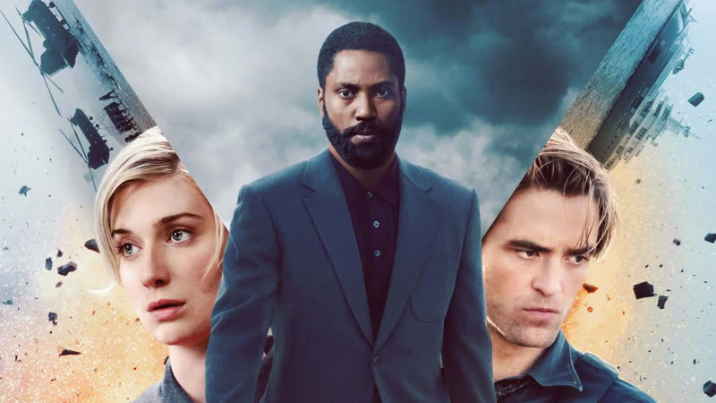
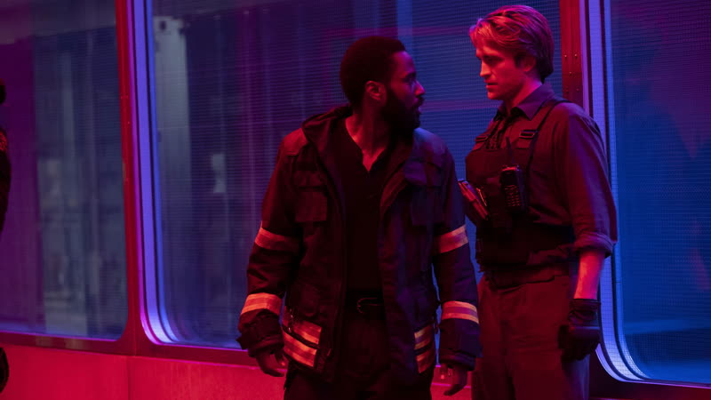

2020 · deep timeline available
Tenet
A spy thriller in which people and objects can run backwards through time, so the same fight is staged twice, once in each direction.
How it plays with time
Objects and people can have their entropy inverted, so they move backwards through time while the world around them moves forwards. The film's big set piece is a temporal pincer movement: one team runs forwards and another runs inverted, and both converge on the same battle from opposite ends. The Protagonist and Neil each cross their own path, so a character can meet a version of themselves. source
Themes
- Time
- In the pincer movement, one team advances forwards and another is inverted and moves backwards. Both are fighting the same battle from opposite ends of its timeline, so what one team sees as the cause, the other sees as the effect. The structure of the fight is the idea. source
- Duality
- In the climactic hypocenter, several versions of the same character exist at once, some forwards and some inverted. The film also plays on palindromes, with the title and several names echoing a Latin word square that reads the same in every direction. source
- Sacrifice
- Neil, recruited by a future Protagonist, takes on the job of protecting a mission he will not live to see completed, and gives his life in the hypocenter so the others can leave with the nine pieces of the Algorithm. source
- The machine
- The Algorithm is made of nine pieces, designed so that people in the future can invert the world's entropy and destroy the past. Sator collects all nine, and the Protagonist and Ives have to take them back from the hypocenter before the device is used. source
- Deception
- Sator, dying and willing to take the world with him, uses an inverted bullet to wound Kat. This is the film's cleanest trick on the audience: the harm is already done before the weapon is fired, and the viewer works out the order afterwards. source
Where it came from
- Nolan spent roughly twenty years developing the ideas and started writing the script in 2014. Nolan source
- He worked from how he imagined Sergio Leone made Once Upon a Time in the West, and avoided watching spy films while writing so they would not shape the script. Nolan source
- Physicist Kip Thorne helped with early analysis of the time and quantum ideas; Nolan has said the film is loosely based on real science but does not claim accuracy. Nolan source
- Ludwig Göransson wrote parts of the score to sound the same forwards or backwards, and recorded an orchestra playing reversed sheet music, then reversed the recording. Ludwig Göransson source
- A web search summary credits a childhood viewing of a Roger Moore Bond film, and the image of a bullet leaving a wall (used in Memento), as roots of the film. I did not fetch the underlying interview. Nolan unverified
Stills


Stills © their studios, used here for commentary and criticism.
People who keep coming back
- Hoyte van Hoytema, Director of photography: also interstellar, dunkirk, oppenheimer
- Ludwig Göransson, Composer: also oppenheimer
- Jennifer Lame, Editor: also oppenheimer
- Emma Thomas, Producer: also following, memento, insomnia, batman begins, the prestige, the dark knight, inception, the dark knight rises, interstellar, dunkirk, oppenheimer
- Nathan Crowley, Production designer: also batman begins, the prestige, the dark knight, the dark knight rises, inception, interstellar, dunkirk
- Michael Caine, Sir Michael Crosby: also batman begins, the prestige, the dark knight, inception, the dark knight rises, interstellar
How it was received
Critics were mostly favourable but split. Praise went to the scale, the staging of the inverted action and the ambition; complaints went to the dense plot, heavy exposition and a mix that made dialogue hard to hear. It opened in cinemas during the pandemic, which shaped its box office. Metacritic 69 source. Rotten Tomatoes 70% source.
The Letterboxd page was fetched but gave no usable number, only that user reviews are mixed with the same complaints about plot and sound. Rotten Tomatoes audience score was 76% from over 5,000 ratings when fetched. Metacritic user score was 7.2 from 1,673 ratings.
Three things most people miss
- The Sator Square runs through the film: the title, and character and place names such as Sator, Arepo, Opera and Rotas, are taken from its palindromic Latin words. source
- The score is built on the same idea as the plot: Göransson had musicians play reversed sheet music and then reversed the recording, so you cannot easily tell if the orchestra is running forwards or backwards. source
- The film leans on determinism: characters repeatedly say that what has happened has happened, and one analysis reads Kat as the character who best embodies free will. source
Cast
John David Washington as The Protagonist; Robert Pattinson as Neil; Elizabeth Debicki as Kat Barton; Dimple Kapadia as Priya Singh; Michael Caine as Sir Michael Crosby.